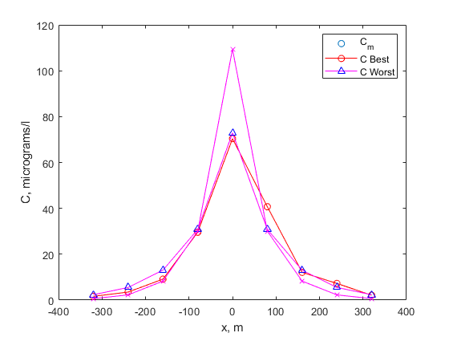

clear all
close all
clc
W = 246;
k_1 = 0.25;
Q = 3.13;
A = 72600;
D = 40*24:240:100*24;
C_m = [1.63 3.5 9.13 29.6 70.4 40.7 12.1 7.26 2.12];
x = -320:80:320;
v = Q/A;
for j = 1:length(D)
m = sqrt(1+((4*k_1*D(j))/(v^2)));
C_0 = W/(m*Q);
r_1 = v*(1+m)./(2*D(j));
r_2 = v*(1-m)./(2*D(j));
for i = 1:length(x)
if x(i) <= 0
C_x(j,i) = C_0*exp(r_1*x(i));
elseif x(i) >= 0
C_x(j,i) = C_0*exp(r_2*x(i));
end
C_x(j,i) = C_x(j,i)*10.^6;
end
RMSE(j) = sqrt(mean((C_x(j,:) - C_m).^2));
deltaC=max(C_m)-min(C_m);
CE=RMSE/deltaC*100;
SSE=sum((C_m-C_x).^2);
SSyy=sum((C_m-mean(C_m)).^2);
R2=1-SSE/SSyy;
disp(['If D= ' num2str(D(j)/24)])
disp(['RMSE= ' num2str(RMSE(j))])
disp(['CE= ' num2str(CE(j))])
fprintf('\n')
end
disp(['Min CE= ' num2str(min(CE))])
disp(['Max CE= ' num2str(max(CE))])
plot (x,C_m,'o')
hold all
plot (x,C_m,'-or','markeredgecolor','red')
plot(x,C_x(6,:),'-^m','markeredgecolor','blue')
plot(x,C_x(1,:),'-xm','markeredgecolor','magenta')
hold all
xlabel('x, m');
ylabel('C, micrograms/l');
legend('C_m','C Best','C Worst')
If D= 40
RMSE= 13.6468
CE= 19.8441
If D= 50
RMSE= 9.867
CE= 14.3478
If D= 60
RMSE= 7.2149
CE= 10.4913
If D= 70
RMSE= 5.376
CE= 7.8174
If D= 80
RMSE= 4.2447
CE= 6.1724
If D= 90
RMSE= 3.7858
CE= 5.505
If D= 100
RMSE= 3.8777
CE= 5.6386
Min CE= 5.505
Max CE= 19.8441
